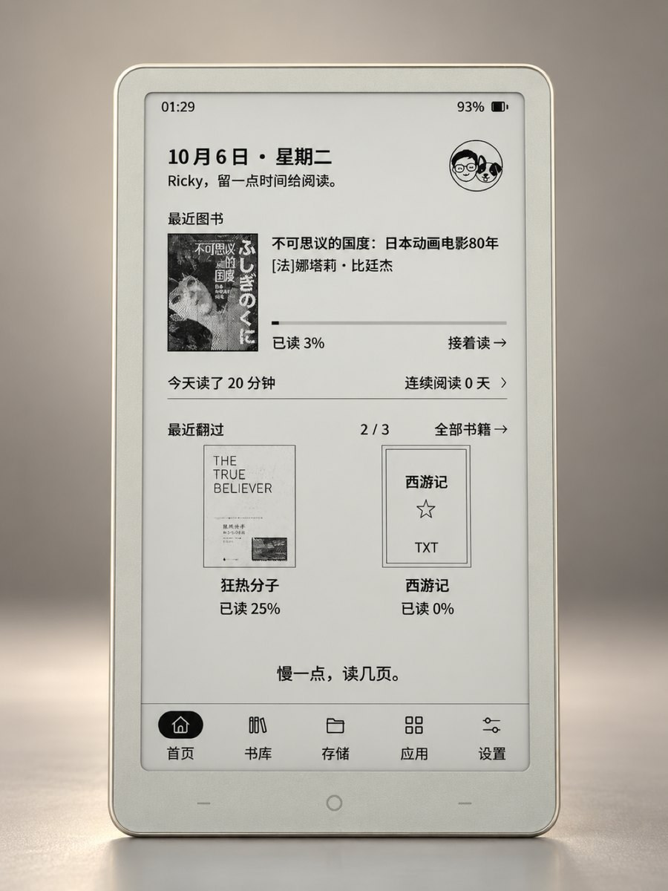

为 MindReset 小纸 Read Pico 打造
阅读，回到主角。
打开一本书。留一点时间给自己。
由 Ricky AI Studio 打造的阅读与生活系统。
从上次读到的地方，
继续。
继续阅读、最近翻过的书，
打开首页就能找到。
少一点干扰。
统一的界面，清楚的导航。
书籍与文件各有自己的位置。

你的随身书房。
也留一点生活。
自己的问候、头像和待机画面。
阅读之外，还有轻量生活工具。
首页从继续阅读开始书库全部、在读、未读存储书籍、字体和图片生活工具轻量，不喧宾夺主
正式版 RickyOS 1.1.2
进入安装工作台 为小纸装上 RickyOS。
用电脑 Chrome 或 Edge 连接设备，几分钟装好。
已经装好的设备，在设置里就能在线更新。
安装前，你只需要知道这些。
需要先安装其他系统吗？＋
不需要。原厂系统、CrossMux 或其他系统都可以直接安装：网站会先识别设备，已装有 CrossMux 或 RickyOS 的只更新应用，其余完整安装。
我的书籍会受到影响吗？＋
SD 卡上的书不受影响，网站不操作 SD 卡。从原厂或其他系统完整安装时，会清理设备内部文件，原来的设置不保证沿用。
第三方固件，安装页可选先备份完整 Flash。先看看安装流程 →